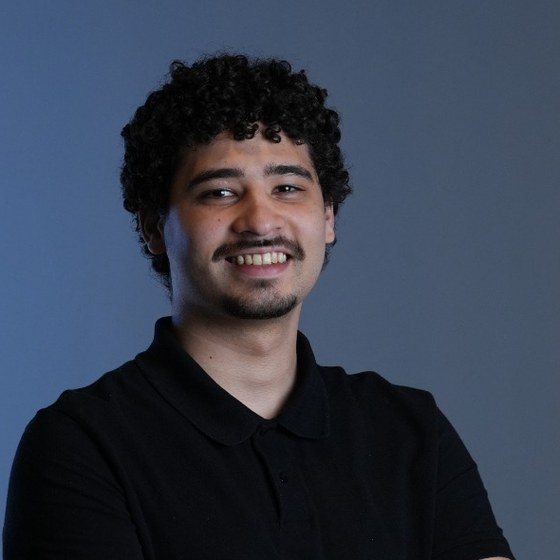

Gabriel Vítor Silva Brito
Desenvolvedor full stack com foco em inteligência artificial, machine learning e automação de processos, atuando em produto com IA no núcleo. Trabalho do backend e dos agentes até o front-end web, o app em React Native e a infraestrutura que sustenta a aplicação.
Em números
Experiência profissional
- Desenvolvimento full stack em produto com IA no núcleo.
- Front-end: construção de interface, componentes reutilizáveis e melhorias de usabilidade.
- Integração com LLMs e agentes, conectando modelo, ferramentas e interface.
- Aplicativos em React Native, do desenvolvimento até a publicação na App Store e na Play Store.
- Stack: React, TypeScript, React Native, Python, integração com LLMs.
- Soluções digitais para o setor público, atuando do backend à interface.
- Automação de processos operacionais que antes eram executados manualmente.
- Apoio a infraestrutura, ambientes containerizados e deploy das aplicações.
- Stack: PHP, Vue/Nuxt, MySQL, Docker, Linux.
- Levantamento de processo junto a quem executa, mapeando gargalos reais antes de escrever código.
- Entrega de integrações entre sistemas, rotinas agendadas, extração e tratamento de dados, bots e disparos.
- Uso de LLMs e agentes quando agregam resultado, e de scripts simples quando são a resposta certa.
- Entrega documentada e com ambiente reproduzível, sem dependência do desenvolvedor.
- Apoio a alunos em programação web, revisão de código e resolução de dúvidas práticas.
Competências técnicas
Projetos selecionados
Superagente de IA com arquitetura desacoplada: toda a lógica de inferência no backend Python, frontend como interface pura.
github.com/bielvitooor/codely-frontendPlataforma que conecta agricultura familiar ao consumidor final, cobrindo oferta, pedido e fluxo de entrega.
github.com/bielvitooor/hortaclickSistema de gerenciamento de entregas em MVC, com ambiente inteiro containerizado.
github.com/bielvitooor/Sys-DeliverySistema de gestão para o Posto de Vendas do IF Goiano, Campus Ceres.
github.com/bielvitooor/pv-projectTrês VMs provisionadas do zero: servidor web, banco de dados e gateway, com rede privada e IPs estáticos.
github.com/bielvitooor/proj_lab_redesPolítica padrão DROP, NAT com MASQUERADE, rate limit de ICMP e filtragem de conteúdo com logging.
github.com/bielvitooor/firewall-redesFormação acadêmica
TCC: HortaClick, plataforma de gestão cooperativa para agricultura familiar.
Base em desenvolvimento web, redes e fundamentos de programação.